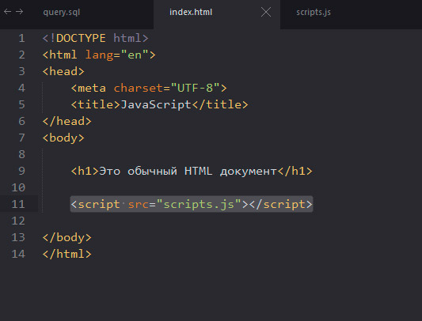

JavaScript — це мова програмування, яка приносить інтерактивність до вашого веб-сайту (наприклад: ігри, реакція на натиски кнопок, введеня даних через форми, динамічна зміна стилів, анімація). Ця стаття допоможе розпочати вивчення цієї захоплюючої мови і дасть вам уяву про її можливості.
JavaScript ("JS" скорочено) це повноцінна динамічна мова програмування, яка, у застосуванні до HTML документу, може надати динамічну інтерактивність на веб-сайтах. Вона була винайдена Бренданом Eйхом, співзасновником проекту Mozilla, the Mozilla Foundation, та Mozilla Corporation.
JavaScript має надзвичайно багато застосувань. Ви можете розпочати з малого: створити "каруселі", галереї зображень, динамічні макети сторінок, відповіді на натиски кнопок, тощо. Із досвідом, ви зможете створювати ігри, 2D та 3D графіку, складні застосунки з використанням баз даних та багато іншого!
JavaScript доволі компактна та гнучка мова. Розробники забезпечили велике розмаїття інструментів, що доповнюють основу мови JavaScript, які відкривають величезну кількість додаткового функціоналу з мінімальними зусиллями.
